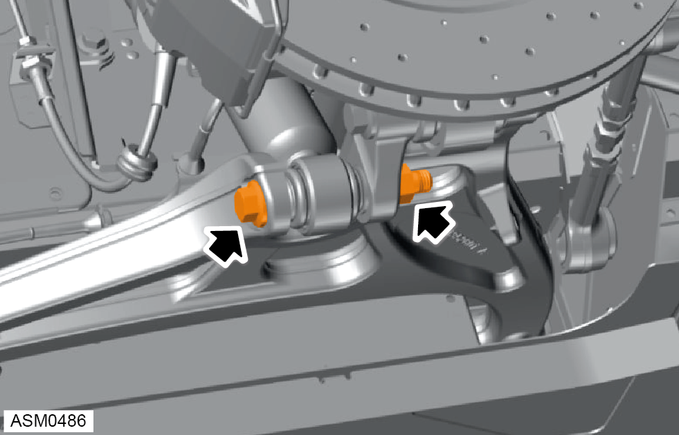
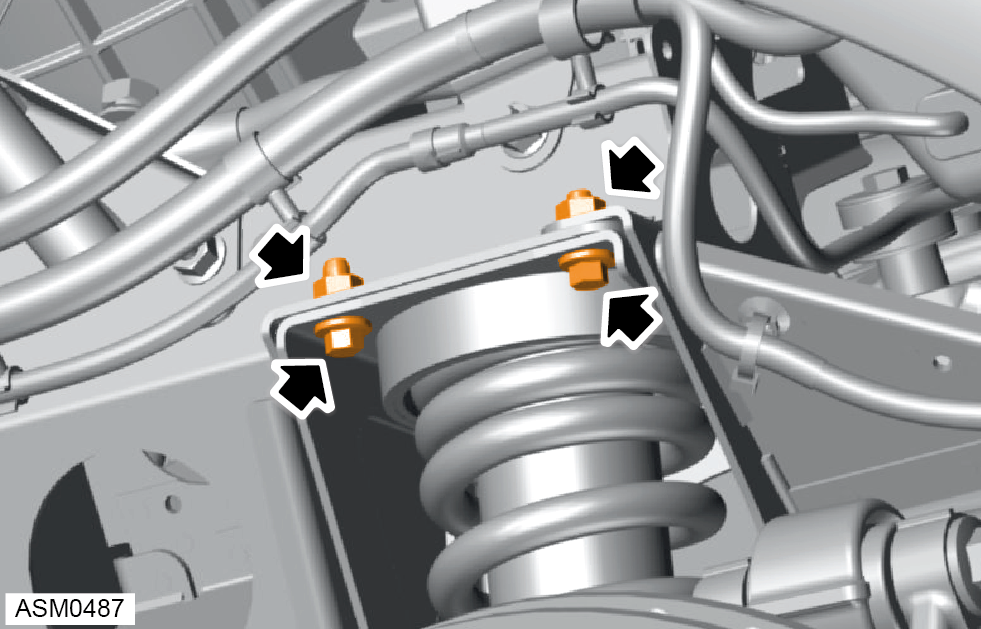
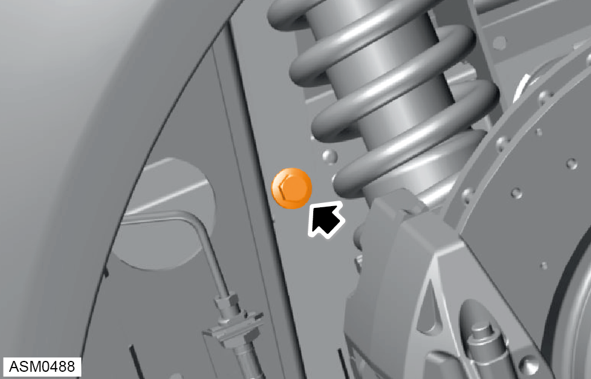
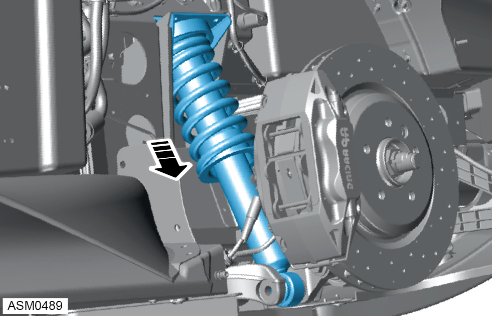

Spring / Damper Assembly - Left Side - Rear
Print
Operation Code: 31.03.40-02
Removal
- Remove rear wheel arch liner. Refer to procedure.
- Remove rear anti-roll bar drop link. Refer to procedure.

- Remove M14x110 bolt and M14 nut securing lower damper mounting to lower wishbone. Torque 190 Nm.

- Remove M8x20 bolts (x2) and M8 nuts (x2) securing upper section of top mount bracket to subframe. Torque 24 Nm.

- Remove M10x20 bolt securing side section of top mount bracket to chassis tower. Torque 45 Nm.

- Remove Damper assembly.
Do not carry out further disassembly if removing for access only.
- Remove rear road spring left side. Refer to procedure.
Installation
- Installation is the reverse of removal procedure except for the following:
- Renew lock nut fasteners that have been removed during removal procedure.